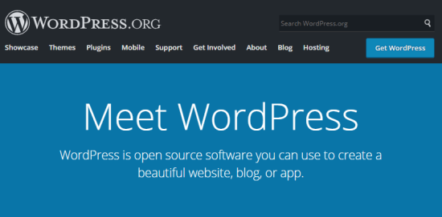
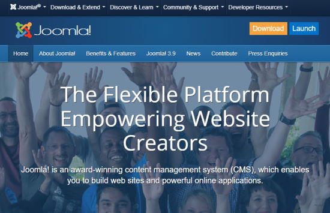
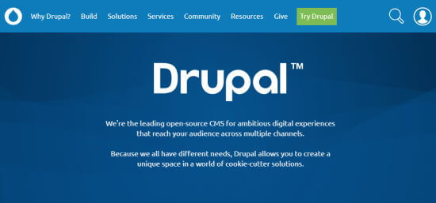

Popular CMS Tools
What are the popular CMS Tools?
As content management systems continue to evolve, we see continuing development of the features customers are demanding, and what you should be expecting out of a CMS. There are so many choice in the market to choose i.e WordPress, Joomla, Drupal etc.
1. WordPress
WordPress is by far the most popular content management system. In fact, the WordPress CMS powers over 32% of all the websites on the Internet, including sites like The New Yorker, BBC America, Forbes, and The New York Times.. More .
There are a ton of reasons WordPress is so popular. It’s free to download and use. It’s also easy to learn, flexible, and search engine friendly. Plus, thousands of themes and plugins make it one of the most customizable platforms. WordPress offers unsurpassed ease when it comes to not only managing a website, but also creating professional and engaging web pages, all for an affordable, or even free, price
Key Features : WYSIWYG Editor, Monetization , Multilingual (through plugins), Multi-user Environment, Password protection, Global Navigation, Full Customizability of Theme/Template, Files, Content Scheduling, SEO-Friendly Content Structure, Advanced SEO Options (with SEO plugins), Extensive number of plugin solutions (both free and paid), Extensive number of themes (both free and paid).
2. Joomla
It is another popular free open source CMS platform that comes with lots of different templates and extensions. It was first released in 2005, so like WordPress, it’s been going for years. Joomla is packed with features, and many web hosts offer a 1 click installation. However, it’s really an ideal CMS platform for developers and experienced website creators, so it’s not such a good option for beginners.
It’s a good fit for any website that needs comprehensive content management – for example, educational institutions or complex websites like social networks.
Joomla is written in PHP script language and offers a supports 60+ languages and have features such as caching, RSS feeds, blog posts, search and support for language translation.
Key Features : Basic Editor, Monetization, Multilingual, Password Protection, Global Navigation, Full Customizability of Theme/Template Files, Customizable Access Control and Tiered Permissions, Advanced Content Scheduling, Full-Fledged Versioning (with module), SEO-Friendly Content Structure, Advanced SEO Options (with module).
3. Drupal
Drupal is another open source CMS platform. It’s the CMS behind some major websites, including The Economist’s site and a number of university’s sites. Drupal is a good option for developers, or for people able to hire a developer. It’s especially good if you’re aiming to build a highly customized site that needs to handle a lot of data.
Drupal is also free, though you’ll need your own hosting. From an advanced administration panel, it helps to totally control the presentation of content as well as user and permission management. Out of the box, it’s fast loading, secure and supports 70+ languages. Ready-made solutions for different market segments such as Tourism or eCommerce makes website-building easier for users.
While beginners may be better off skipping this CMS, developers should have no trouble building awesome websites
Key Features : Basic Editor, Monetization, Multilingual, Password Protection, Global Navigation, Full Customizability of Theme/Template Files, Customizable Access Control and Tiered Permissions, Advanced Content Scheduling, Full-Fledged Versioning (with module), SEO-Friendly Content Structure, Advanced SEO Options (with module).